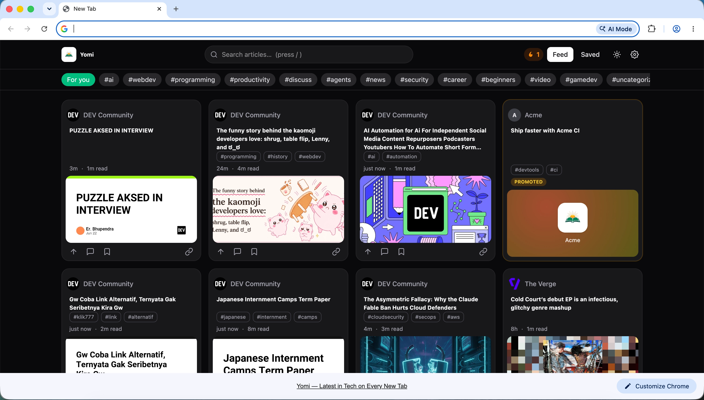
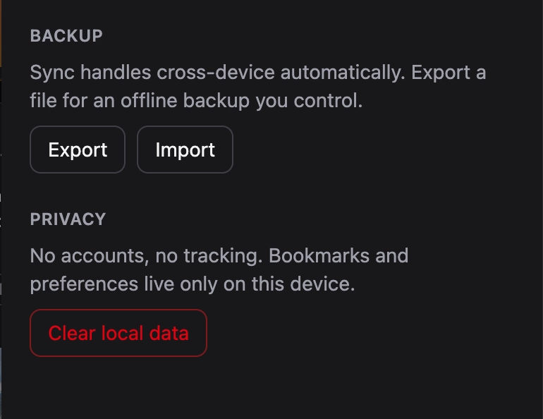
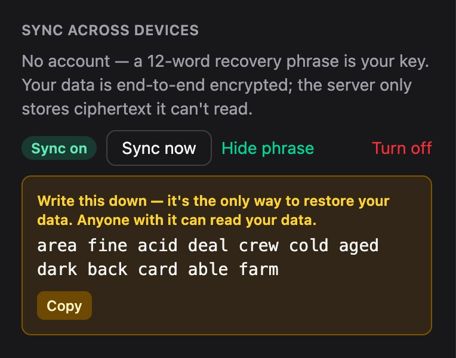

Yomi turns each new tab into a calm, fast feed of great developer writing — from hundreds of blogs, Hacker News, and DEV. No account. No tracking. Open source.
All the daily-feed habit, none of the profile-building.
Articles from hundreds of dev blogs, Hacker News, DEV, and curated YouTube channels — de-duplicated and ranked so the best, freshest writing rises. Filter by tag, search, or source.

Open an article in a clean reader without leaving your tab — and for Hacker News stories, read the live comment thread right alongside it.
Bookmarks, reading streaks, read-state, and "not interested" all live on your device. The server can't tie a request to you — there's no account and no behavioral profile. Verify it: it's open source.

Want your bookmarks on your laptop and desktop? Turn on sync and get a 12-word recovery phrase. Your data is encrypted on-device before it ever leaves; the server only stores ciphertext it can't read. No email, no login, ever.

Same new-tab habit. A fundamentally different deal for your data.
| Yomi | daily.dev | |
|---|---|---|
| Use it without an account | Yes | Sign-up required |
| Behavioral tracking / profile | None — on-device | Feed personalized from tracked activity |
| Self-hostable | Yes | No |
| Open source | Yes (MIT) | Partial |
| Cross-device sync | End-to-end encrypted | Account-based |
| Monetization | Labeled sponsors + privacy-respecting ads | Ad network + Plus |
| Price | Free | Free + paid Plus |
Switching from daily.dev for privacy reasons? Yomi is the clean-room, open alternative. Read the code →
No account, no tracking pixels, no profile. Personal data stays on-device; the server is stateless about you — and it's verifiable, because it's open.
MIT-licensed. Run it yourself, audit the code, submit and vote on sources. Your feed, your rules.
Curated sources include digital-rights and tech-justice voices alongside the best dev blogs. A feed built by a community that cares where its attention goes.
Yes. Yomi is free and open source (MIT). It's funded by clearly-labeled sponsored posts and privacy-respecting ads — never by selling or tracking you.
No. There's no account and no behavioral profile. Your bookmarks, history, and preferences stay in your browser. The server only sees anonymous feed requests it can't tie to a person. See the privacy policy.
Yes — the API, extension, and database are all open source. Clone the repo and run your own instance. Get started on GitHub →
You get a 12-word recovery phrase that derives an encryption key on your device. Your data is encrypted locally before upload; the server stores only ciphertext addressed by an opaque hash. We never receive your phrase or key, so we can't read your data.
Chrome (and Chromium browsers) and Firefox. The same codebase builds both.
Labeled "Promoted" cards from aligned sponsors, plus privacy-respecting ad fill (EthicalAds) — no surveillance ad networks. Optional donations and a future "Plus" tier help cover hosting.
Free, open, and private. Add Yomi in a couple of clicks.